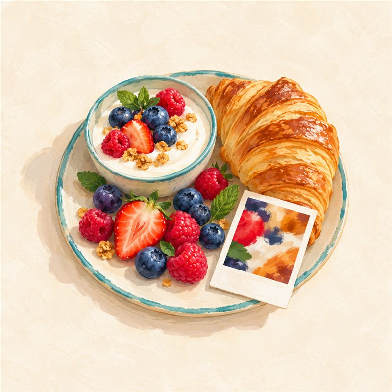

Malá zpráva pro tebe
Jak to dneska jde se sladkým?
Ať je odpověď jakákoli, jsem s tebou.
Dnes
Ať je odpověď jakákoli, jsem s tebou.
Ulož si, co máš dobrého
Tvoje malé momenty

Vyfoť si první jídlo. Fotka, datum i čas zůstanou jen v tomhle iPhonu.
Všechno hezky pohromadě
Ať ti appka sedí přesně
V Safari klepni na Sdílet a potom na „Přidat na plochu“. Appka pak funguje i offline.
Ještě není nainstalovanáVyber si tři chvíle, kdy ti mám připomenout, ať se na moment zastavíš.
Časy se ukládají jen v tomhle zařízení. Upozornění z Kalendáře internet nepotřebují.
Fotky a odpovědi zůstanou jen v tomhle iPhonu. Nikdo jiný je neuvidí, ani já.
Když smažeš appku nebo data Safari, smažou se i všechny záznamy.